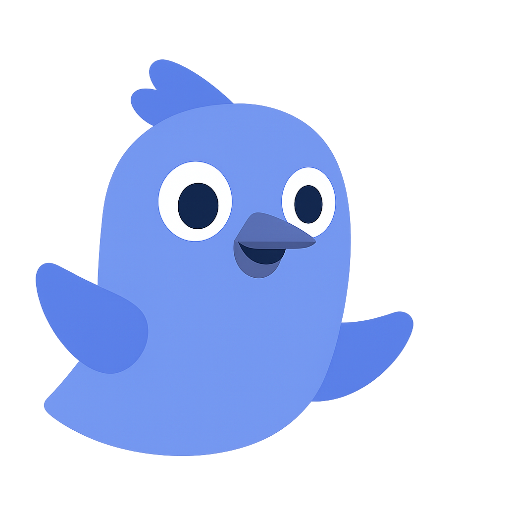

Conheça a história por trás do NINHO e nossa missão de transformar vidas
O NINHO nasceu como um projeto de TCC no Instituto Buussola Jovem, inspirado pela ODS 3 - Saúde e Bem-Estar da Agenda 2030 da ONU. Identificamos a saúde mental como uma área crucial que precisava de atenção especial.
Em nossa pesquisa, nos deparamos com uma realidade alarmante: o abuso sexual infantil afeta milhares de crianças no Brasil, deixando marcas profundas que perduram pela vida toda quando não tratadas adequadamente.
Criamos então uma plataforma que conecta vítimas e famílias a psicólogos especializados, oferecendo um espaço seguro, acolhedor e profissional para o processo de cura e reconstrução.

Oferecer acolhimento psicológico especializado e acessível para vítimas de abuso sexual infantil e suas famílias, promovendo cura, resiliência e reconstrução de vidas.
Ser a principal referência nacional em apoio psicológico para casos de abuso sexual infantil, criando uma rede de proteção que alcance todas as regiões do Brasil.
Jovens transformadores que acreditam no poder da empatia e da tecnologia
Instituto Formador
Nosso berço educacional que nos proporcionou as ferramentas para transformar ideias em realidade.
Equipe Multidisciplinar
Jovens dedicados unidos por um propósito comum: fazer a diferença na vida de quem mais precisa.
Rede de Apoio
Psicólogos especializados que dedicam seu tempo e expertise para acolher e transformar vidas.
Nosso trabalho está diretamente conectado com o Objetivo de Desenvolvimento Sustentável 3 da ONU, que visa assegurar uma vida saudável e promover o bem-estar para todos, em todas as idades.
SAÚDE E BEM-ESTAR
Estamos construindo algo maior que uma plataforma - estamos criando uma rede de esperança. A cada psicólogo que se junta a nós, a cada família que busca ajuda, damos mais um passo na direção de um futuro onde nenhuma criança precise enfrentar a dor sozinha.
Seus dados e histórias estão protegidos conosco
Todos os psicólogos passam por rigorosa seleção
Um espaço livre de julgamentos e cheio de empatia
Seja parte dessa transformação. Juntos, podemos construir um futuro mais seguro e acolhedor para nossas crianças.